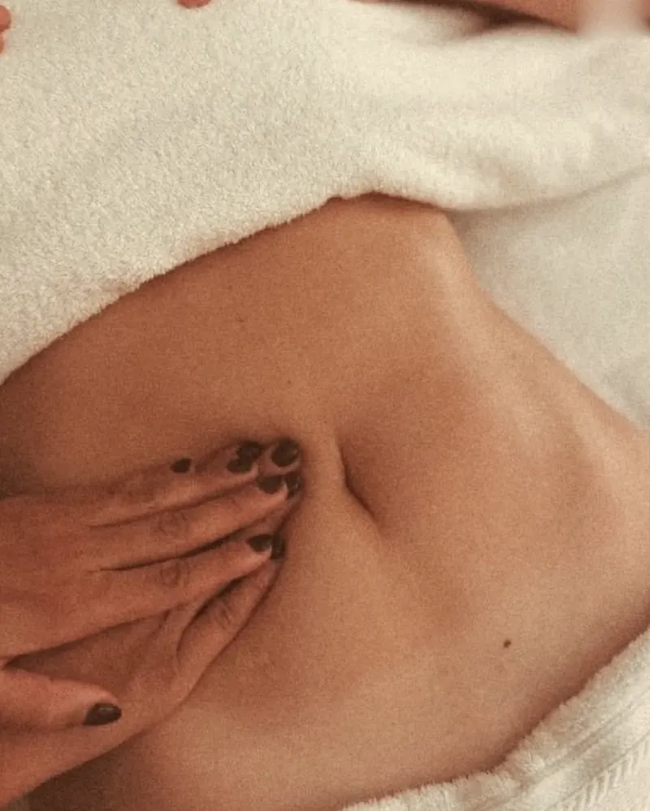
Drainage lymphatique
Le soin au cœur de la maison. Des gestes lents, précis et enveloppants.
Réserver ce rituel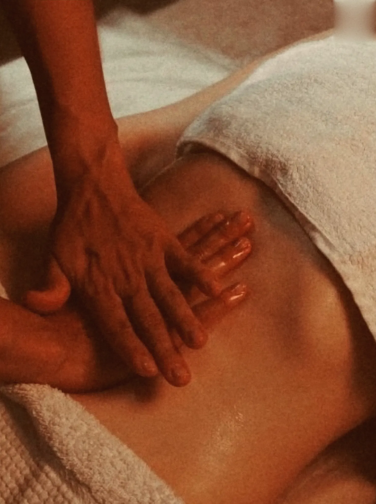
Un lieu dédié au drainage lymphatique, où chaque séance devient un temps de calme, de chaleur et d’attention.
Chez Peachy, rien ne presse. Une lumière douce, un linge épais, des gestes précis : chaque détail est là pour que le corps se dépose, et que l’esprit suive.
Vous venez comme vous êtes. Le temps du soin vous appartient.
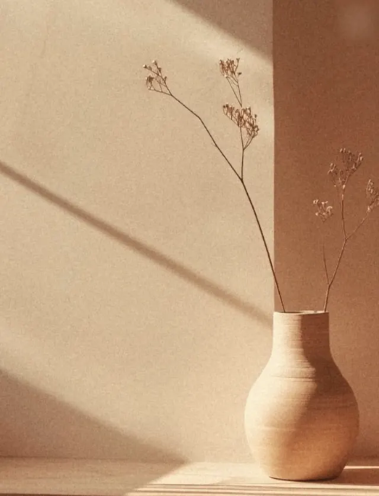
Un massage doux et rythmé, qui accompagne la circulation naturelle de la lymphe. Rien de brusque : des pressions légères, des mouvements lents, un corps qui se relâche.
Trois façons de prendre soin de soi chez Peachy. Chaque rituel se réserve seul, ou se compose avec les autres.

Le soin au cœur de la maison. Des gestes lents, précis et enveloppants.
Réserver ce rituel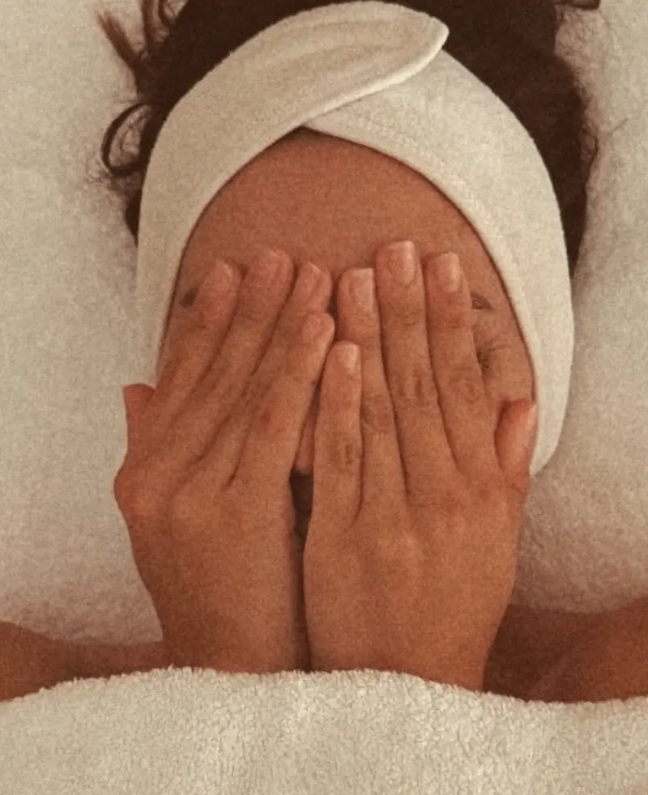
La lumière comme soin. Un temps de pause pour le visage, les yeux fermés.
Réserver ce rituel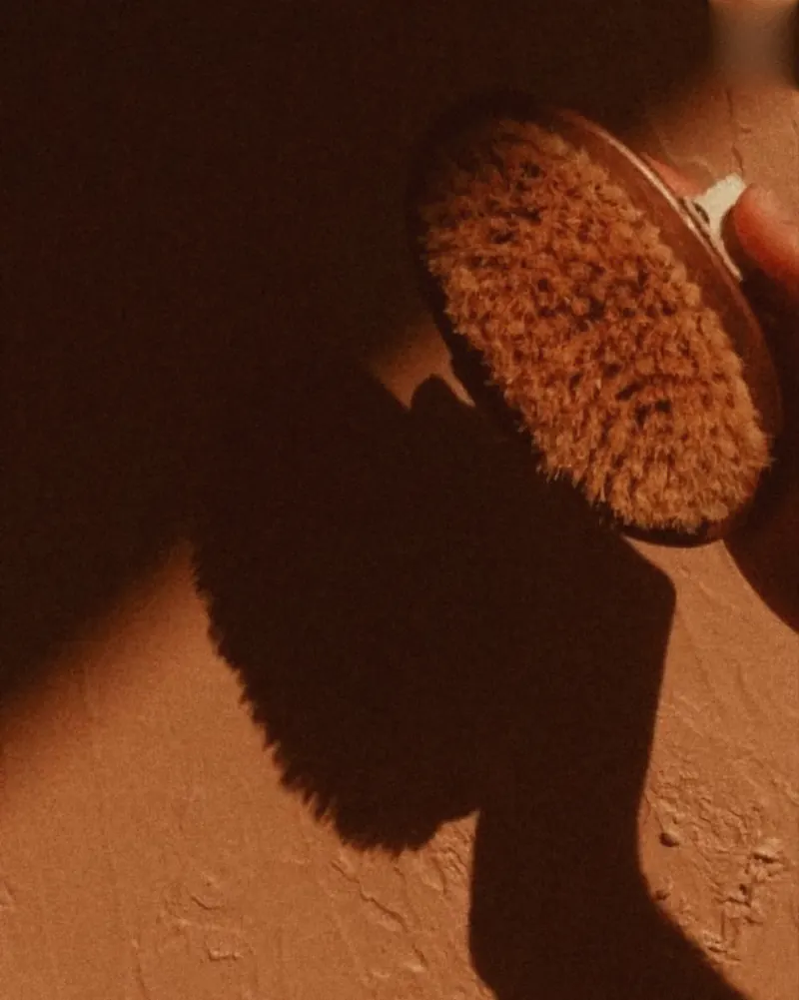
Un geste de préparation, tonique et doux à la fois, pour réveiller la peau.
Réserver ce rituel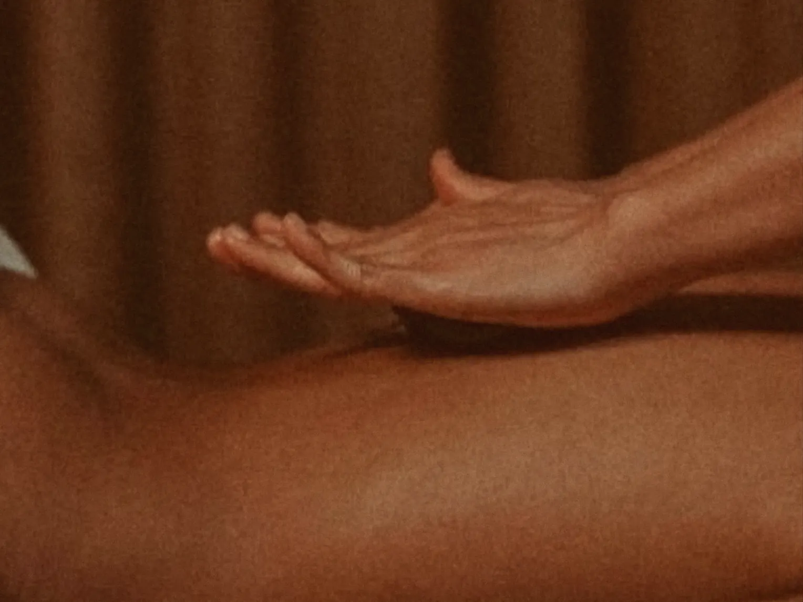
La pression, le rythme, la direction : rien n’est laissé au hasard. Une attention entière, du premier contact au dernier.
Des niches sculptées dans l’enduit, une lumière qui tombe juste, du linge clair. Un lieu dessiné pour que le calme s’installe avant même le soin.
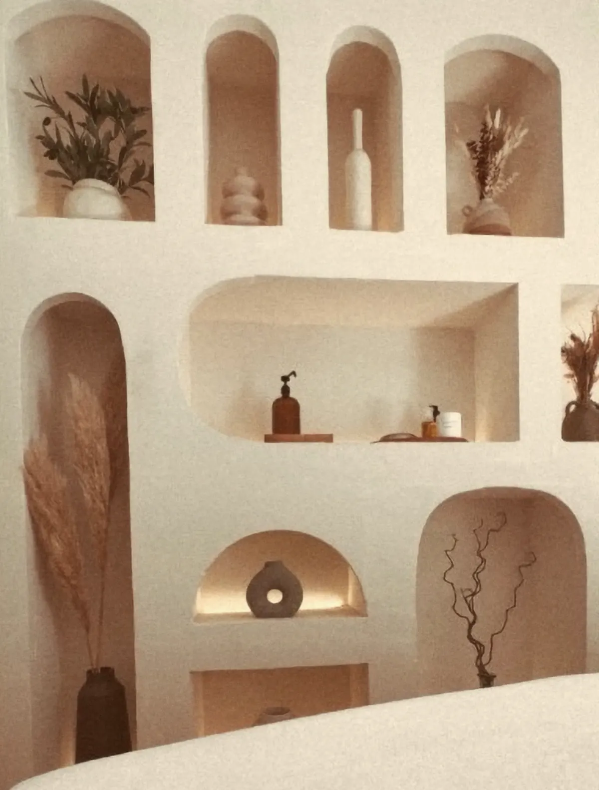
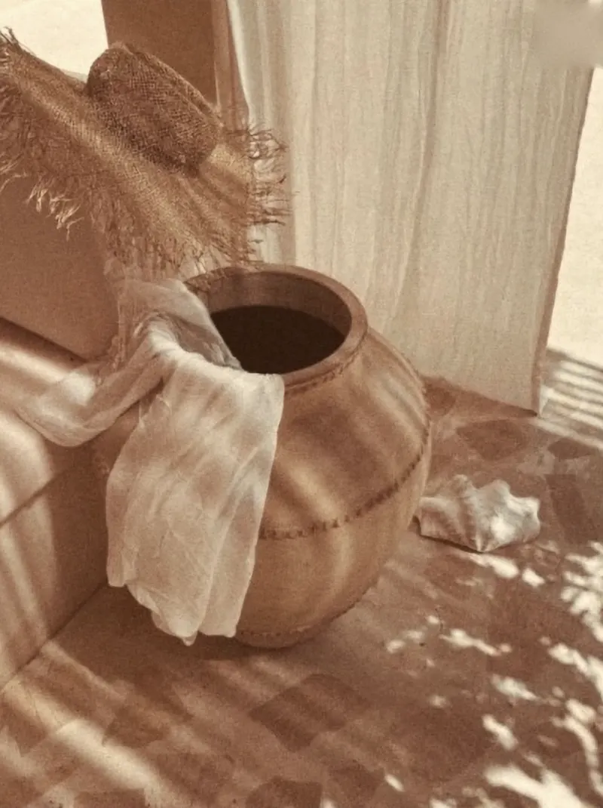
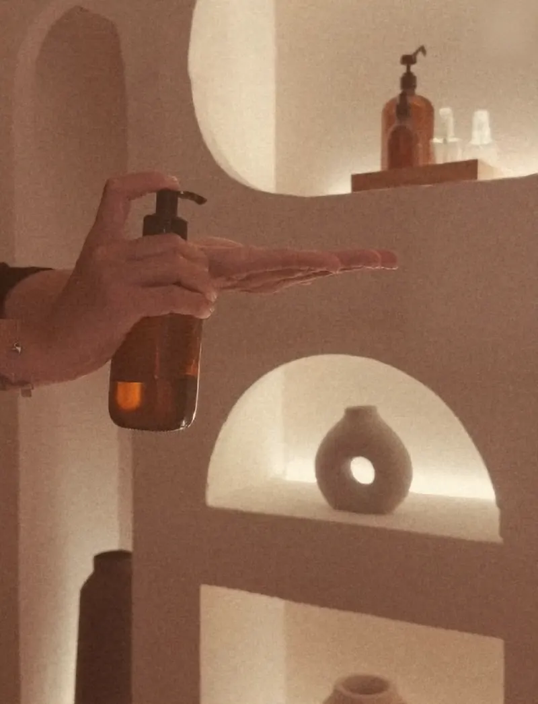
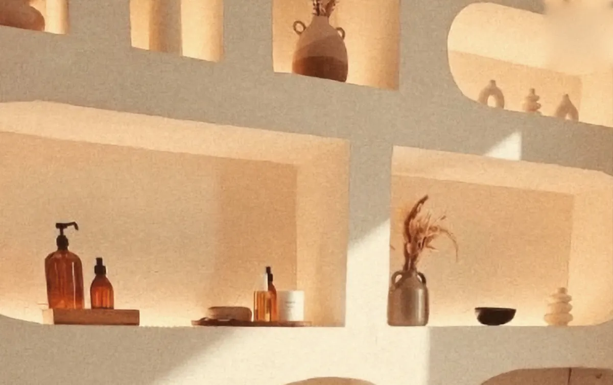
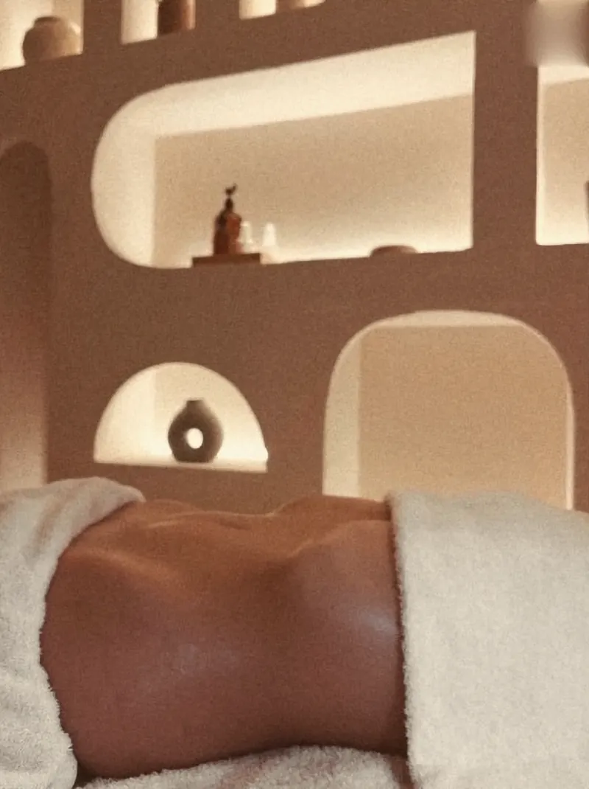
Les mots de nos clientes auront bientôt leur place ici, publiés avec leur accord.
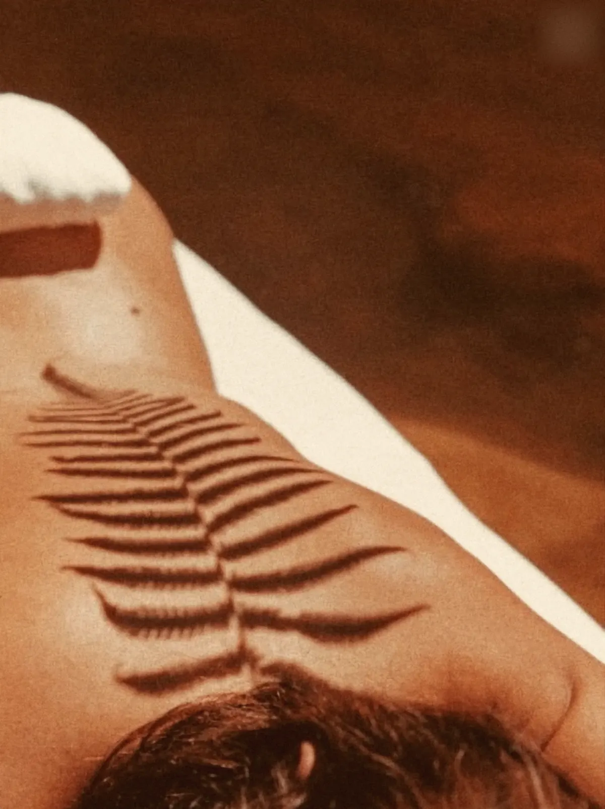
Choisissez votre rituel, nous nous occupons du reste.
Réserver mon soinLa réservation se fait pour l’instant par message, sur notre compte Instagram.